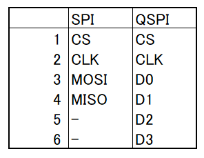
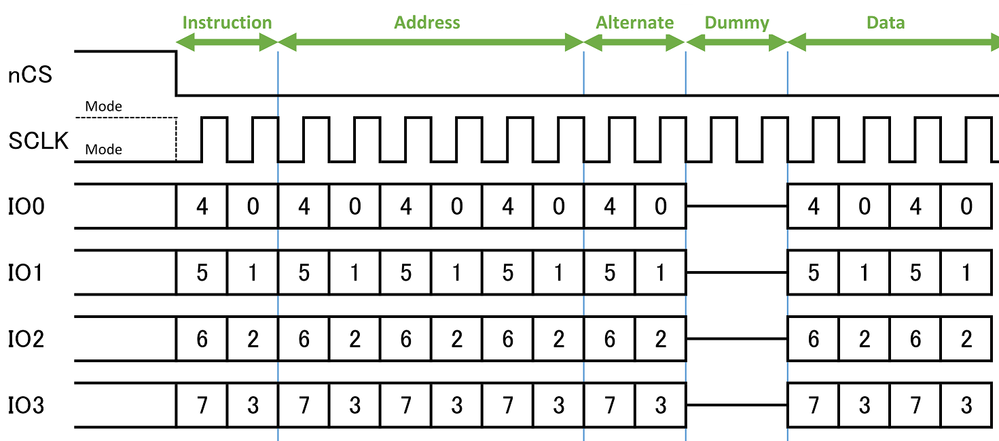
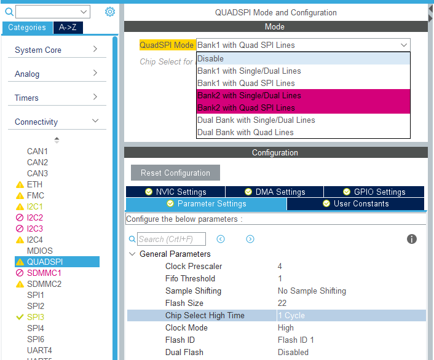
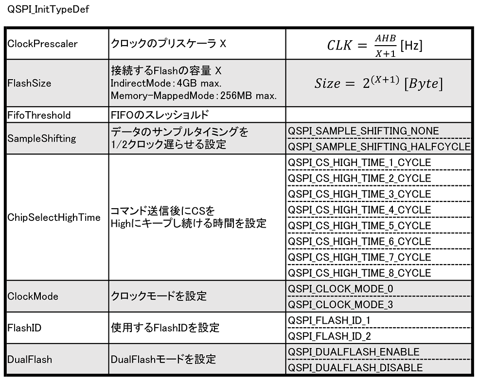
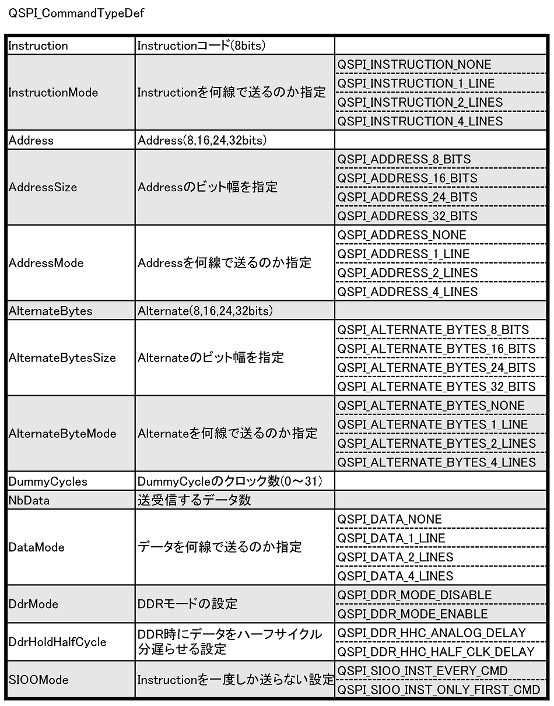
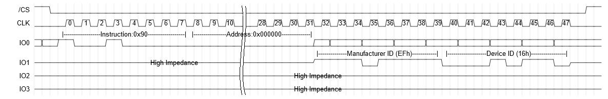
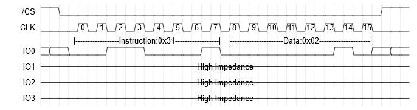
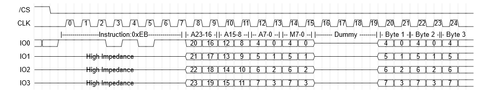

はじめに
この記事はMice Advent Calendar 2019の20日目の記事です．
昨日の記事は半田ディザスターさんのしろめくんが死んだ話とver2の話の記事でした．
～感想～
さて，今日は新作のトレーサーに搭載したNOR Flashを使うために試行錯誤した話をまとめようと思います．
搭載したFlashはwinbond W25R64JV，です(データシートはDigikeyから取れました)．
この記事では，STM32でのQuadSPIの使い方と，winbond NOR Flashの使い方についてまとめようと思います．
QuadSPIについて
SPI通信では4本の信号線で全二重方式の通信ができます．
データラインは上りが1本，下りが1本です．
QSPI通信では6本の信号線で半二重方式の通信を行います．
データラインは，Quad I/O通信時は上りと下り共用で4本です．
(これパラレル通信では？ と思うのだけれど詳しい人教えてください)
端的に言って，同時に4本使ってデータを送れるので，
速い
というわけです．
今回はこれを使っていきます．

STM32 HALでのQuadSPI
フレームフォーマット
STM32では，QSPIのフレームを次のように，Instruction，Address，Alternate，Dummy，Dataという名前を付けて定義しています．
図では4線通信をしており，長さも一例ですが，
それぞれ1線・2線に変更したり，ある程度の制約の中でクロック数を変えることは出来ます(詳しくは後述)．

初期設定
STM32CubeMX
STM32CubeMXでコード生成する場合は，QUADSPIを有効にすれば初期化コードが生成されます．

General Parametersの説明は次章で行うため省略します．
HAL
HALのAPIを直接叩いて設定する方法です．
ざっくりと，以下のようなコードで初期設定を行います．
1
2
3
4
5
6
7
8
9
10
11
12
13
14
15
16
17
18
19
20
21
22
23
24
| __HAL_RCC_QSPI_CLK_ENABLE();
__HAL_RCC_GPIOE_CLK_ENABLE();
QSPI_HandleTypeDef hqspi;
hqspi.Instance = QUADSPI;
hqspi.Init.ClockPrescaler = 2;
hqspi.Init.FifoThreshold = 4;
hqspi.Init.SampleShifting = QSPI_SAMPLE_SHIFTING_NONE;
hqspi.Init.FlashSize = 22;
hqspi.Init.ChipSelectHighTime = QSPI_CS_HIGH_TIME_1_CYCLE;
hqspi.Init.ClockMode = QSPI_CLOCK_MODE_0;
hqspi.Init.FlashID = QSPI_FLASH_ID_1;
hqspi.Init.DualFlash = QSPI_DUALFLASH_DISABLE;
HAL_QSPI_Init(&hqspi);
GPIO_InitTypeDef GPIO_InitStruct;
GPIO_InitStruct.Pin = GPIO_PIN_2;
GPIO_InitStruct.Mode = GPIO_MODE_AF_PP;
GPIO_InitStruct.Pull = GPIO_NOPULL;
GPIO_InitStruct.Speed = GPIO_SPEED_FREQ_VERY_HIGH;
GPIO_InitStruct.Alternate = GPIO_AF9_QUADSPI;
HAL_GPIO_Init(GPIOE, &GPIO_InitStruct);
|
QSPI_InitTypeDef は下記の通りです．

Indirect Mode
Indirect Modeは全てのコマンドを実行できるモードです．
Instruction，Address，Alternate，Dummy，それぞれの設定を QSPI_CommandTypeDef を使って設定を行い，その後Dataを送受信します．
設定漏れがあると正しく動かないので下記表を参考にして適切に設定していきます．

Auto Polling Mode
Auto Polling Modeは，主にステータスレジスタを監視して書き込み完了をポーリングするために使うモードです．
NOR Flashの使い方
接続
接続はいたって簡単です．

IDの読み出し(1線)
今回使用したW25Q64JVSSIMのManufacturer IDとDevice IDは下記の通りです．
| Manufacturer ID |
Device ID |
| EFh |
16h |
まずはこのIDを読み出すことでデバイスとの接続を確認します．
下記のコマンドを実行することでIDを読み出せます．

上記のデータを送信するコードです．
1
2
3
4
5
6
7
8
9
10
11
12
13
14
15
16
17
18
19
20
| QSPI_CommandTypeDef qspi_typedef;
qspi_typedef.Instruction = 0x90;
qspi_typedef.InstructionMode = QSPI_INSTRUCTION_1_LINE;
qspi_typedef.Address = 0x000000;
qspi_typedef.AddressSize = QSPI_ADDRESS_24_BITS;
qspi_typedef.AddressMode = QSPI_ADDRESS_NONE;
qspi_typedef.AlternateBytes = 0x00;
qspi_typedef.AlternateBytesSize = QSPI_ALTERNATE_BYTES_8_BITS;
qspi_typedef.AlternateByteMode = QSPI_ALTERNATE_BYTES_NONE;
qspi_typedef.DummyCycles = 0;
qspi_typedef.NbData = 2;
qspi_typedef.DataMode = QSPI_DATA_1_LINE;
qspi_typedef.DdrMode = QSPI_DDR_MODE_DISABLE;
qspi_typedef.DdrHoldHalfCycle = QSPI_DDR_HHC_ANALOG_DELAY;
qspi_typedef.SIOOMode = QSPI_SIOO_INST_EVERY_CMD;
HAL_QSPI_Command(&hqspi, &qspi_typedef, 1000);
uint8_t qdata[2];
HAL_QSPI_Receive(&hqspi, qdata, 1000);
|
QSPIの許可
FlashのWrite Status Register-2 (31h)でステータスレジスタ2のQuad Enableを1にすることで4線通信が有効化されます(初期値0)．
このビットは不揮発ビットのため，一度設定してしまえば電源を切断しても再設定不要です．
下記のコマンドで許可を行うことが出来ます．

上記のデータを送信するコードです．
1
2
3
4
5
6
7
8
9
10
11
12
13
14
15
16
17
18
| QSPI_CommandTypeDef qspi_typedef;
qspi_typedef.Instruction = 0x31;
qspi_typedef.InstructionMode = QSPI_INSTRUCTION_1_LINE;
qspi_typedef.Address = 0x0;
qspi_typedef.AddressSize = QSPI_ADDRESS_24_BITS;
qspi_typedef.AddressMode = QSPI_ADDRESS_NONE;
qspi_typedef.AlternateBytes = 0x00;
qspi_typedef.AlternateBytesSize = QSPI_ALTERNATE_BYTES_8_BITS;
qspi_typedef.AlternateByteMode = QSPI_ALTERNATE_BYTES_NONE;
qspi_typedef.DummyCycles = 0;
qspi_typedef.NbData = 1;
qspi_typedef.DataMode = QSPI_DATA_1_LINE;
qspi_typedef.DdrMode = QSPI_DDR_MODE_DISABLE;
qspi_typedef.DdrHoldHalfCycle = QSPI_DDR_HHC_ANALOG_DELAY;
qspi_typedef.SIOOMode = QSPI_SIOO_INST_EVERY_CMD;
HAL_QSPI_Command(&hqspi, &qspi_typedef, 1000);
uint8_t data = 0x02;
HAL_QSPI_Transmit(&hqspi, &data, 1000);
|
データの消去
データの消去には4種類の方法があります．
- Sector Erase：1セクター(4KB)毎にデータを消去します．これが消去できる最小単位です．
- 32KB Block Erase：(このチップは1Block=64KBなのですが，何故32KB消去のコマンドがあるのでしょうか……)
- 64KB Block Erase：1ブロック(64KB)毎にデータを消去します．
- Chip Erase：チップ全てを消去します．
消去を行ったビットは全て1となり，データの書き込みを行えるようになります．
データの消去には多少の時間がかかるため，ステータスレジスタを確認して消去の完了を待機する必要があります．
データの消去前にはGlobalBlockUnlockなどのアンロックコマンドを実行してから行う必要があります．
また，データの消去を行う前には，毎回Write Enableを実行する必要があります．
データの書き込み
データの書き込み(Program)は基本的に256Byte単位で行います．
データの書き込み前にはGlobal Block Unlockなどのアンロックコマンドを実行してから行う必要があります．
また，データの書き込みを行う前には，毎回Write Enableを実行する必要があります．
データの読み出し
データの読み出しはいくつかの種類があります．
- Read Data
- Fast Read
- DTR Fast Read
- Fast Read Dual Output
- Fast Read Quad Output
- Fast Read Dual I/O
- DTR Fast Read Dual I/O
- Fast Read Quad I/O
- DTR Fast Read Quad I/O
| 設定 |
説明 |
| DTR |
DDRと同義，CLKの立ち上がりと立ち下がりの両方でデータをラッチする |
| Fast |
アドレスを指定した後にダミークロックを送る必要がある代わりに，クロックの速度を上げることが出来る |
| Output |
データのみが2/4線となる |
| I/O |
アドレスとデータが2/4線となる |
一例として，Fast Read Quad I/Oのコマンドとコードを示します．

1
2
3
4
5
6
7
8
9
10
11
12
13
14
15
16
17
18
19
| void FastReadQuad(uint32_t addr, uint8_t* data, size_t num) {
QSPI_CommandTypeDef qspi_typedef;
qspi_typedef.Instruction = 0x6B;
qspi_typedef.InstructionMode = QSPI_INSTRUCTION_1_LINE;
qspi_typedef.Address = addr;
qspi_typedef.AddressSize = QSPI_ADDRESS_24_BITS;
qspi_typedef.AddressMode = QSPI_ADDRESS_1_LINE;
qspi_typedef.AlternateBytes = 0x00;
qspi_typedef.AlternateBytesSize = QSPI_ALTERNATE_BYTES_8_BITS;
qspi_typedef.AlternateByteMode = QSPI_ALTERNATE_BYTES_NONE;
qspi_typedef.DummyCycles = 8;
qspi_typedef.NbData = num;
qspi_typedef.DataMode = QSPI_DATA_4_LINES;
qspi_typedef.DdrMode = QSPI_DDR_MODE_DISABLE;
qspi_typedef.DdrHoldHalfCycle = QSPI_DDR_HHC_ANALOG_DELAY;
qspi_typedef.SIOOMode = QSPI_SIOO_INST_EVERY_CMD;
HAL_QSPI_Command(&port, &qspi_typedef, 1000);
HAL_QSPI_Receive(&port, data, 1000);
}
|
おわりに
QSPI，およびwinbondのNOR Flashを使うための情報をまとめました．
Flashは扱いが大変ですが，その中でもNOR Flashは扱いやすいタイプのメモリなので，積極的に使っていきたいと思います．
明日はmakotoさんの今年の反省と来年の話です．
～感想～